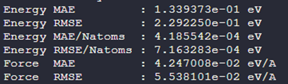

A Model Fine-tuning Example for Hexa-Doped Perovskites
More is different —— Philip W. Anderson
Author: why; And English version is translated from Chinese by ChatGPT 4o, if there is anything hard to read, please let me know.
Background of the Example
In cases with complex elemental compositions, such as high-entropy alloys, traditional machine learning potentials have typically struggled with both training difficulty and final accuracy. This is because in systems with a high number of constituent elements, the spatial distribution and combinations of these elements escalate exponentially. Since conventional machine learning potentials lack strong generalization capabilities, they require sampling of every spatial distribution, which is impractical. With the advent of highly generalizable large atomic models, there is hope for resolving these issues in multi-element systems. In this example, we demonstrate how to train such a machine learning potential using the PFD-kit (alongside the Bohrium platform). This demonstration comprises two parts; here, we first present the model fine-tuning phase, with the distillation phase to be covered separately.
Directory and File Descriptions
Directories
POTCAR — Stores POTCAR files for all DFT calculations
poscar — Stores POSCAR files for all DFT calculations
assets — Contains images used in the documentation
Files
example.json — Parameter file for fine-tuning
train.json — Parameter file for model training
INCAR. *—— All DFTINCAR files
Base Large Atomic Model (Due to file size limitations on GitHub, please download from aissquare and rename accordingly: https://aissquare.com/models/detail?pageType=models&name=DPA-2.3.0-v3.0.0b4&id=279)
Introduction to Training Approach
Even though large atomic models exhibit strong generalization capabilities, it is still essential to integrate physical knowledge in advance, carefully planning the configurations to ensure rapid and accurate coverage of the potential energy surface required for the problem.
To address the example’s problem—(Ba1/2Na1/4Bi1/4)(Ti7/8Zr1/8)O3 (BNBZTO) perovskite—we can simplify as follows: a perovskite material can be seen as a series of stacked cubes. The smallest orange atoms represent O atoms on the cube faces, while pink atoms represent Ti and Zr atoms (B-site atoms) at the cube vertices, and the center comprises Ba, Na, and Bi atoms (A-site atoms). By disregarding symmetry breaking due to lattice distortion and ignoring cases where Zr atoms replace Ti, we only need to consider the arrangements of A-site atoms. To simplify, we confine these configurations to a 2x2x2 supercell and, after arranging the A-site atoms, partially replace B-site atoms based on the given ratios, tallying the total possible distributions. Due to the high symmetry of the cubic lattice, some configurations are fundamentally equivalent, thus significantly reducing the actual configurations. We used a tool designed to compute irreducible configurations with symmetrical arrangements, disorder【Phys. Rev. B 102, 134209 (2020), https://github.com/jichunlian/disorder/】to filter down to just 16 configurations. These 16 configurations are saved in the POSCAR directory, labeled as POSCAR-xx.
We assume no long-range interactions in these perovskites, implying that sampling these 16 configurations could, in principle, represent all disordered configurations. These 2x2x2 supercells contain a small number of atoms, allowing us to train a model efficiently. However, this assumption is overly optimistic; we must account for more complex interactions. Consequently, the fine-tuning also includes a few 4x4x4 supercells, labeled BNBZT_x.vasp. The number of irreducible configurations for a 4x4x4 random cell is astronomically large, so we select only a minimal set of 5 configurations. Fine-tuning these two supercell sizes should capture both strong nearest-neighbor and weaker next-nearest-neighbor interactions. So let’s proceed.
Explanation of Fine-tuning Parameters
First, parameters related to the Bohrium platform should be updated with your ID and project number.
{
"name":"test-interface",
"bohrium_config": {
"username": "",
"password": "",
"project_id": 1111,
"_comment": "all"
}
Next, we skip AIMD to reduce computational cost. This can be enabled if required; AIMD INCAR files are provided.
"task":{
"type":"finetune",
"init_training": true,
"skip_aimd": true
}
Then, select the structure files, ensuring all configurations are included. Here, we reduce the number of perturbations due to the large number of configurations.
"conf_generation": {
"init_configurations":
{
"type": "file",
"prefix": "./poscar/",
"fmt": "vasp/poscar",
"files": [
"BNBZT_1.vasp",
"BNBZT_2.vasp",
"BNBZT_3.vasp",
"BNBZT_4.vasp",
"BNBZT_5.vasp",
"POSCAR-01",
"POSCAR-02",
"POSCAR-03",
"POSCAR-04",
"POSCAR-05",
"POSCAR-06",
"POSCAR-07",
"POSCAR-08",
"POSCAR-09",
"POSCAR-10",
"POSCAR-11",
"POSCAR-12",
"POSCAR-13",
"POSCAR-14",
"POSCAR-15",
"POSCAR-16"
]},
"pert_generation":[
{
"conf_idx": "default",
"atom_pert_distance":0.15,
"cell_pert_fraction":0.03,
"pert_num": 5
}
]}
Similarly, we reduce the number of MD samples during fine-tuning with the following settings:
"stages":[[{
"_comment": "group 1 stage 1 of finetune-exploration",
"conf_idx": [0],
"n_sample":2,
"type": "lmp-md",
"ensemble": "npt",
"dt":0.001,
"nsteps": 3000,
"temps": [300],
"press":[1],
"trj_freq": 500
}]]
The model file is not included due to its size; please download and rename the file accordingly.
"init_models_paths":["YOURMODEL_NAME"],
No further parameters need explanation; please refer to the base PFD tutorial for details if needed.
Explanation of Training Parameters
Typically, only training parameters require modification. Here, the total steps are adjusted based on the final number of configurations.
"training": {
"training_data": {
"systems": [
],
"batch_size": "auto",
"_comment": "that's all"
},
"numb_steps": 20000,
"warmup_steps": 0,
"gradient_max_norm": 5.0,
"seed": 10,
"disp_file": "lcurve.out",
"disp_freq": 100,
"save_freq": 100
}
Increase the step count if necessary.
Results

In the figure below, the gray dashed line represents the accuracy of a model trained from scratch using DPGEN with over 7000 disordered configurations. With only a minimal number of configurations for fine-tuning, we achieved comparable accuracy.
Conclusion
Using a doped perovskite example, we demonstrated how challenges with highly complex compositions in traditional machine learning potentials can be rapidly addressed through pre-training, fine-tuning, and distillation. Addressing disordered configurations not only leverages the large atomic model’s powerful generalization but also combines with physical insights to sample the potential energy surface efficiently.